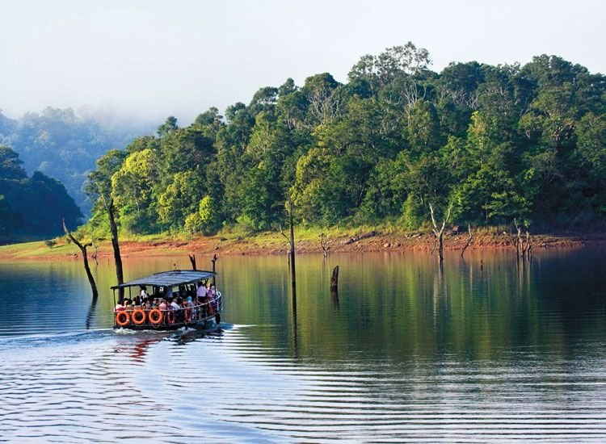
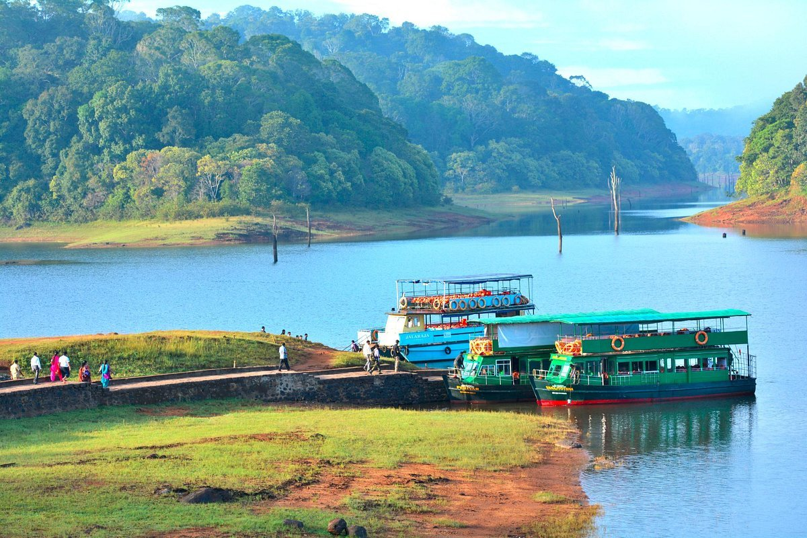
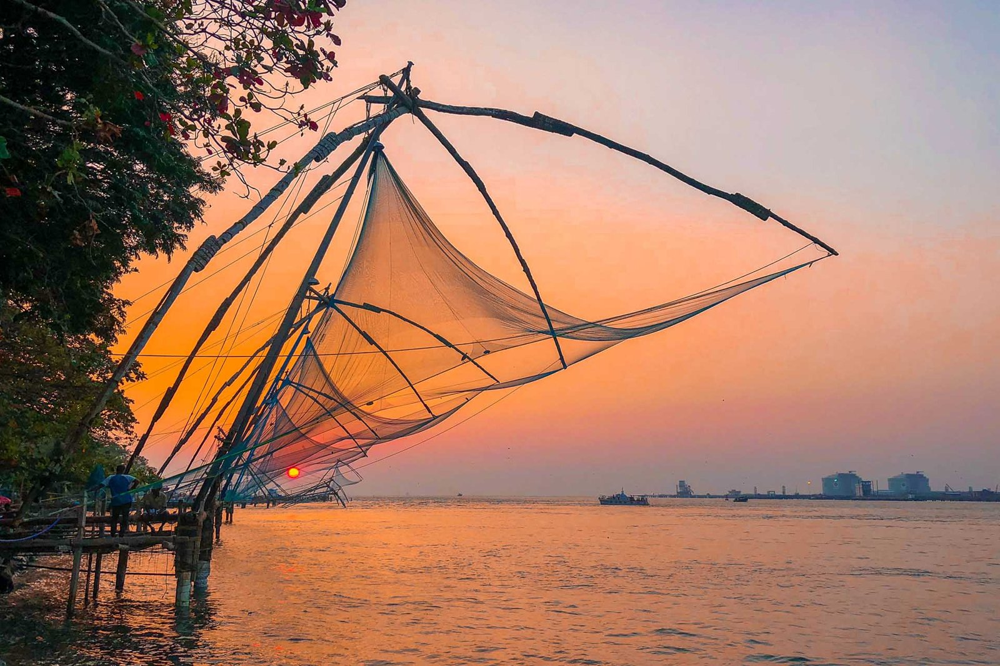
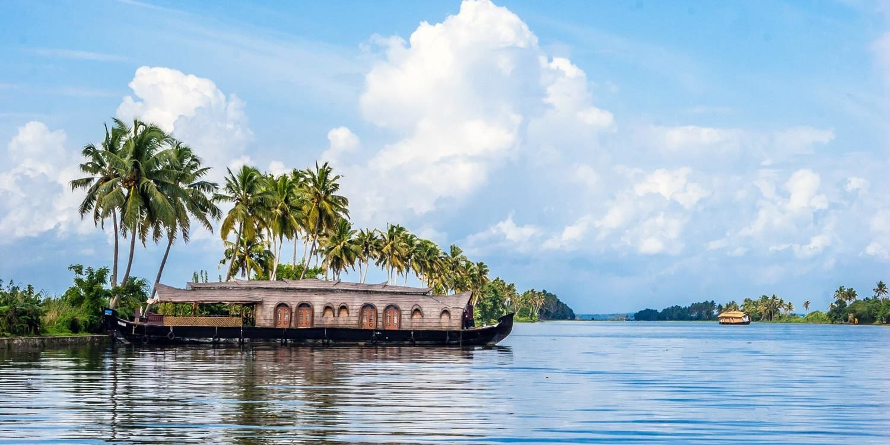
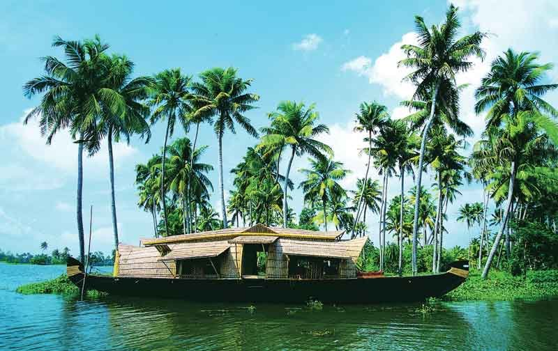

Periyar lake landscape
See the forested shoreline and distinctive standing tree trunks. Activities operate under local reserve rules.

KERALA FIELD NOTES · 05 / 06
Listen to the forest.
FOREST, LAKE & SPICE COUNTRYPERIYAR
Forested hills, spice-growing country and the lake landscape of the Periyar region.
The landscape around Thekkady is rich in green: wooded slopes, spice plants and the waters of Periyar Lake. Tree trunks rising from the lake form one of the area’s recognisable views. The nearby town of Kumily serves as a gateway to this part of the hills.

THE STORIES BENEATH THE SCENERY
The Periyar landscape was reshaped by the Mullaperiyar dam in the late nineteenth century, which created the reservoir associated with today’s lake views. The area later developed a major conservation role as Periyar Wildlife Sanctuary and Tiger Reserve. The surrounding hills also have long connections with spice cultivation and trade.
More background on Thekkady →LOOK A LITTLE CLOSER
See the forested shoreline and distinctive standing tree trunks. Activities operate under local reserve rules.
Learn how crops such as pepper and cardamom connect the region’s climate, farming and trading history.
Ask about officially permitted walks and activities. Wildlife sightings are never guaranteed.
A FEW FRAMES FROM THEKKADY
BEFORE YOU GO
The cooler, drier months are often comfortable. Reserve access and activities depend on weather, conservation needs and current rules.
Use official reserve activities, follow your naturalist’s instructions and never approach or feed wildlife.
CURIOUS ABOUT THEKKADY?
Ask your local guide about the places that interest you.
Contact your guide →THERE’S MORE TO DISCOVER

Chinese fishing nets, old trading streets and a waterfront shaped by centuries of exchange.
Discover Kochi
A lakeside landscape of coconut palms, village waterways and birdlife around Vembanad.
Discover Kumarakom
Palm-lined canals, traditional houseboats and everyday life woven around the backwaters.
Discover Alleppey